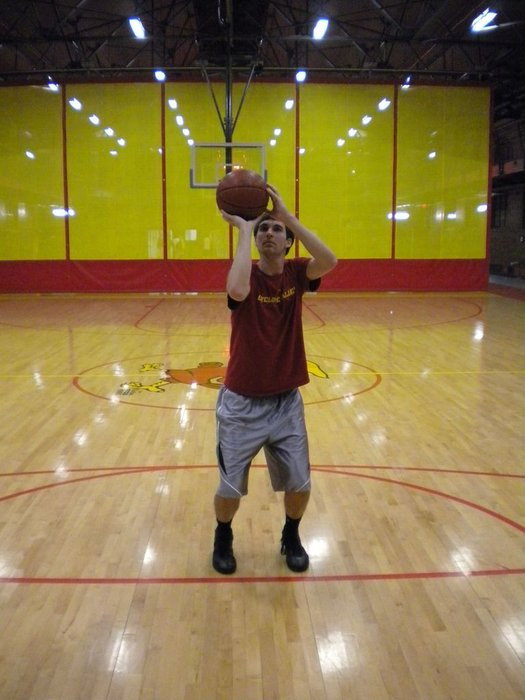

This is the position your hands and the basketball are in right before you take the shot. To enter the fundamental shooting position, this requires bringing the basketball almost to your face. Your dominant hand should be placed directly under the basketball with your non-dominant hand resting on the side of the basketball. Your dominant arm elbow should be close to a 90 degree bend and directly under the basketball. As you bring the basketball up to the shooting position you should also lift the basketball off of your palm by slightly bending your shooting hand fingers upward. Your non-dominant hand is only gently placed on the side of the basketball to help balance and guide it. It should not be holding the basketball.
This step is focusing your eyes on the basketball rim your target. Your eyes are vital here because it is focused on where you want your shot to go. Some shooters find they have the most success when they focus on the middle-hook on the back of the rim as there target.
